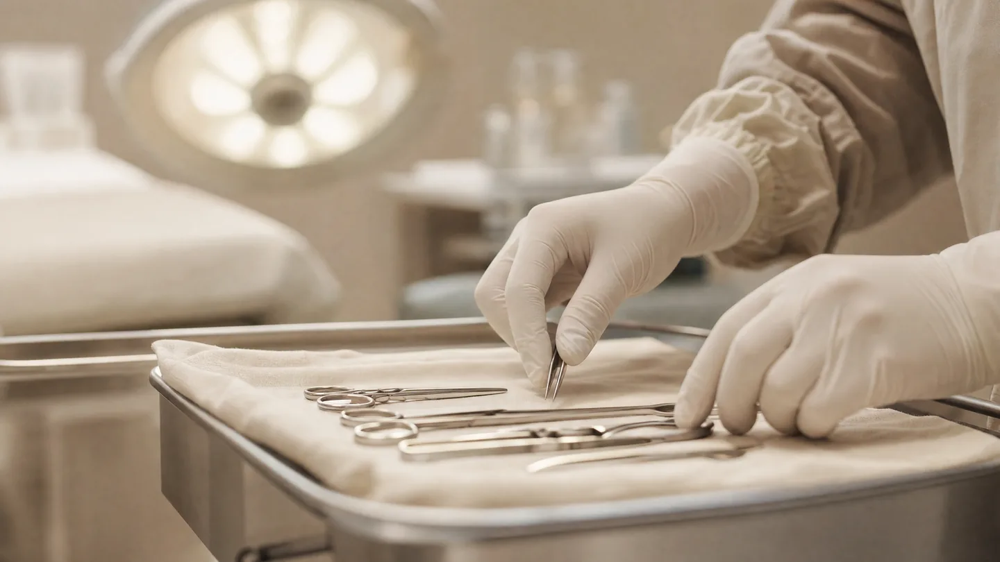

Operative Dermatologie · Chemnitz
Ambulante
Hautoperationen
Gutartige und bösartige Hautveränderungen entfernen wir ambulant in örtlicher Betäubung – mit feingeweblicher Untersuchung und geplanter Nachsorge.
Eingriffe an der Haut – ambulant und geplant
Die meisten Eingriffe an der Haut brauchen weder Vollnarkose noch Klinikaufenthalt. Sie finden bei uns in örtlicher Betäubung statt, und Sie gehen danach zu Fuß nach Hause.
Wir entfernen gutartige Veränderungen wie Fibrome, Alterswarzen, Atherome oder Lipome ebenso wie bösartige Hauttumore – Basalzellkarzinome, Plattenepithelkarzinome und Melanome. Jedes entfernte Gewebe geht zur feingeweblichen Untersuchung ins Labor.
Bei bösartigen Befunden kommt es darauf an, im Gesunden zu entfernen. Zeigt der Laborbefund, dass ein Rand nicht ausreicht, wird nachgeschnitten. Bei ausgedehnten Befunden oder schwierigen Lokalisationen sagen wir Ihnen offen, wenn eine Klinik der bessere Ort dafür ist.
Ein Einblick

KI-generiert
So läuft es ab
Beurteilung & Planung
Wir untersuchen die Veränderung, besprechen die Operationsmethode und was sie für die spätere Narbe bedeutet.
Aufklärung
Sie erhalten alle Informationen zu Ablauf, Risiken und Verhalten danach – in Ruhe und vor dem Termin.
Der Eingriff
Nach örtlicher Betäubung wird die Veränderung entfernt und die Wunde verschlossen. Danach können Sie nach Hause gehen.
Befund & Nachsorge
Fadenzug, Wundkontrolle und Besprechung des Laborbefunds – bei bösartigen Befunden legen wir gemeinsam den weiteren Kontrollrhythmus fest.
Was wir operieren
Ambulante Operationen – Ihre Fragen
Bin ich während des Eingriffs wach?
Ja. Es wird nur die betroffene Stelle örtlich betäubt. Eine Vollnarkose ist für diese Eingriffe nicht nötig.
Darf ich danach Auto fahren?
In der Regel ja, da keine Narkose im Spiel ist. Bei Eingriffen an Beinen oder Händen besprechen wir das im Einzelfall.
Wie lange dauert die Heilung?
Fäden werden je nach Körperstelle nach etwa 7 bis 14 Tagen gezogen. Die Narbe reift danach noch über Monate nach.
Was ist, wenn der Tumor nicht vollständig entfernt wurde?
Der Laborbefund zeigt, ob die Schnittränder frei sind. Falls nicht, wird nachgeschnitten – das ist ein geplanter und üblicher zweiter Schritt.
Muss ich Medikamente vorher absetzen?
Bitte sagen Sie uns, wenn Sie blutverdünnende Medikamente einnehmen. Ob und was abgesetzt wird, entscheiden wir gemeinsam – niemals eigenmächtig.
Termin vereinbaren
Lassen Sie eine Hautveränderung beurteilen – wir planen den Eingriff dann in Ruhe mit Ihnen.
Leipziger Straße 137, 09113 Chemnitz · Mo – Do 08:00–18:00 · Fr 08:00–14:00
Hinweis: Diese Seite dient der allgemeinen Information und ersetzt keine ärztliche Beratung oder Diagnose. Zu operativen Eingriffen gehören Risiken wie Nachblutung, Infektion und Narbenbildung; darüber klären wir Sie vorher persönlich auf. Ob und in welchem Umfang Ihre Krankenkasse eine Leistung übernimmt, klären wir im persönlichen Gespräch. Das Foto im Kopfbereich zeigt unsere Praxisräume in Chemnitz. Das Symbolbild im Text wurde mit künstlicher Intelligenz erzeugt und zeigt weder reale Patientinnen und Patienten noch tatsächliche Aufnahmen aus unserer Praxis.